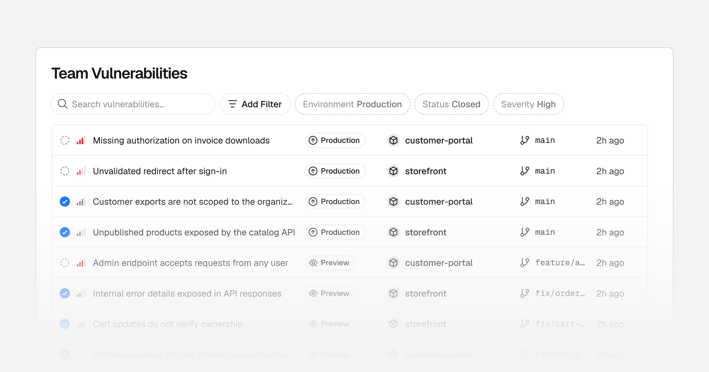
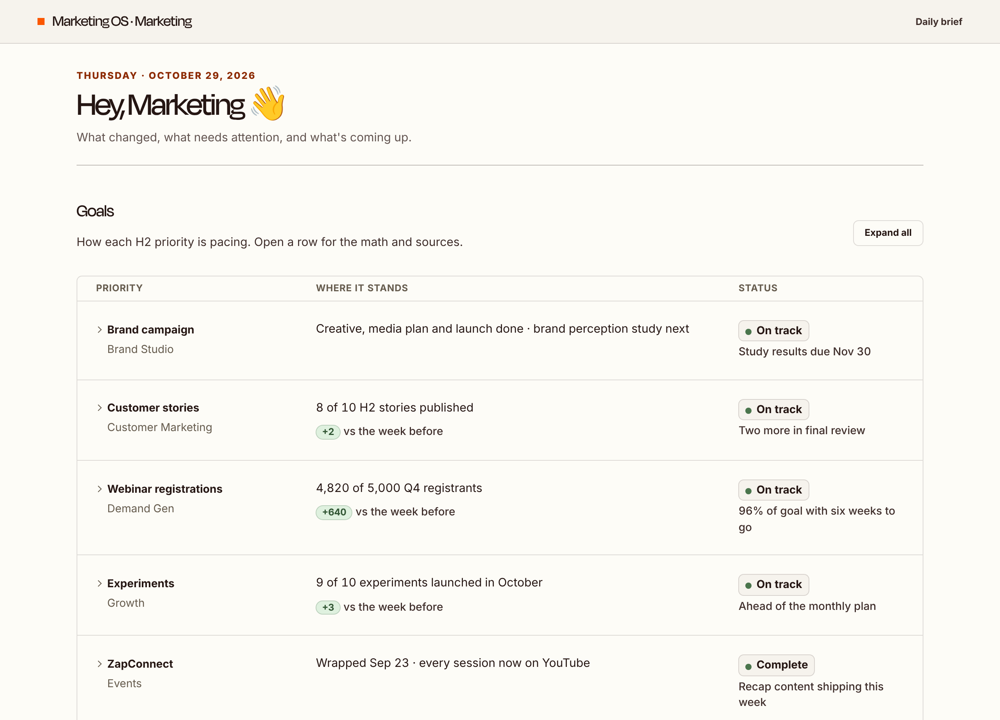
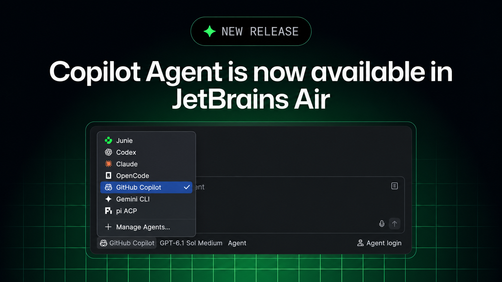
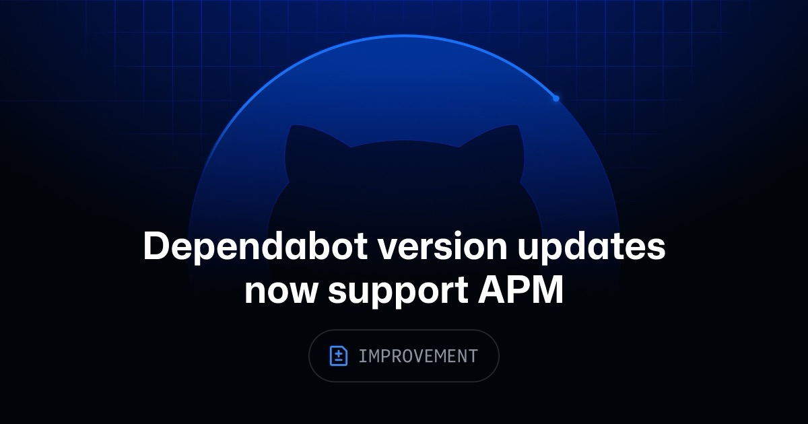

今天没有哪条更新是“看完立刻改行业”的大新闻，倒是有一批很像真活儿：Figma 开始把画布关系交给 code layer，Framer 把实验条件放进可编程漏斗，Vercel 和 GitHub 则继续给 agent 补权限、诊断和依赖更新。
共同点很朴素。AI 已经能写、能改、能跑，下一轮麻烦都在上下文有没有带全、失败后去哪找、每次自动动作要花多少钱。产品团队现在该盯的不是演示有多快，而是这些中间状态终于有没有地方落。
Figma 的 code layer Agent 现在会读原型连线和 interaction，再决定组件怎么响应点击、悬停与页面跳转。过去从设计稿生成代码，最容易丢的恰好不是颜色和圆角，而是“按下去以后发生什么”；这次终于把那层关系也塞进上下文。
Code layers 仍在 open beta。先拿一段包含 overlay、back、条件分支的真实原型测，不要只测一个按钮跳下一页。连线能被看见不等于状态机能被还原，差别就在复杂交互一上来之后。
新连接到 Figma 的 GitHub 仓库，现在默认允许被 clone；管理员可以按仓库关掉，已经存在的连接不会被改。它覆盖所有套餐，等于把“画布里的 agent 能不能拿到真实代码”从隐藏设置提到了默认路径。
默认开启很顺，但权限边界也跟着往前挪了一步。设计系统、营销站和 demo 仓库可以吃这份便利，带客户数据、内部脚本或敏感配置的仓库最好别顺手连。这里不是设计师多一个按钮，而是代码资产多了一个入口。
Framer Convert 的 Agent 已经能创建、编辑和分析 funnel 与 A/B test，也能改 trigger；overlay trigger 还可以按国家和地区触发。过去要在面板里点来点去的实验设置，开始能被一段任务描述批量搭出来。
这会让增长实验快很多，也会让“谁改了哪组流量条件”更难靠肉眼追。还没实测，先不下结论。真要用，第一轮就把命名、受众、默认 variant 和停止条件写成模板，否则 Agent 只是帮团队更快造出一堆没人敢删的实验。

Vercel Security Review 面向 Pro 和 Enterprise 开放 beta。连接 GitHub 后，每次 push——包括 direct push 和 force push——都会触发源码审查；发现项会带项目、环境、分支、commit、严重等级和修复建议，也可以交给 Vercel Agent 开 PR。PR 仍要人批准，它不替你 merge。
边界要看清：这是源码 review，不是运行时监控，也不是渗透测试。11 月 10 日前免费，之后按模型 provider token rate，再加 Vercel 每百万 token 0.25 美元计费。每次 push 都跑一次，碎提交会直接变成账单。先给一个中等体量仓库跑一周，看看误报、平均 token 和单次修复成本，再决定要不要全团队铺开。
Vercel CI 现在可以直接跑私有 GitHub 仓库，不必先创建一个空 Vercel project。前提是 GitHub App 已获该仓库权限、账号已连接，操作者对仓库有 write 或 admin 权限。公开仓库和其他 Git provider 暂时还不支持。
这条不炫，但很适合设计工程里的截图回归、文档构建、token lint 这类任务：它们需要 CI，不一定需要一次 deployment。少一个“为了跑脚本而存在”的空项目，控制台会干净很多。
vercel doctor diagnoses setup problems without changing anythinghttps://vercel.com/changelog/vercel-cli-now-diagnoses-setup-problems-with-vercel-doctorvercel doctor 会检查 CLI 版本、登录与 team、project link、vercel.json 和当前 incident，结果分成 OK、Warning、Failed、Skipped。它不要求先登录或 link，也不会替你做这两件事；--json 会给结构化状态和建议命令。
这种“只诊断，不擅自修”很适合 agent 接管。下一步不是让 agent 遇错就重装一遍，而是先读 doctor --json，只处理失败项，把改了什么留在日志里。终于不用拿一串模糊报错猜当前机器缺哪一步。

这是一篇 Vercel 自家案例，数字先按供应商口径看。Zapier 团队用 Vercel 做内部工具：合作伙伴 demo 从几周压到两小时内，三款内部应用的第一版各用一天；Marketing OS 给六十多位营销同事汇总 daily brief，一个月里还跑了 330 万个 sandbox。
比“几小时做个应用”更有意思的是共享界面。团队没有给每个人塞一个新聊天框，而是把零散 agent 结果收进一张大家每天会看的 brief。内部 AI 产品如果没有共同入口、权限和可回看的状态，生成再快也只是私人脚本。

GitHub Copilot 通过 ACP 进入 JetBrains Air，可以跑本地或云端任务、并行 session，也能在上下文里 review。云端任务每次进一台新的 Docker VM，经由代理联网，不继承上一轮状态；费用走 Copilot 订阅，不吃 JetBrains credits。
有个管理缺口别漏掉：Air 的 governance 和 analytics 看不到 Copilot 用量，管理员也不能在 Air 里给 Copilot 设预算。对个人是无感接入，对企业却是两套账本。上线前先决定使用数据去 GitHub 还是 JetBrains 看，别等月底才发现没人能解释并行 session 花到哪。

Dependabot 现在能更新 Agent Package Manager 的 git 依赖。仓库里有 apm.yml，它就会开 PR 更新 skill、prompt 和 instruction，并重建 apm.lock.yaml。这是 version update，不是 security update；github.com 全套餐 GA，GHES 3.24 稍后跟进。
Agent 资产总算开始像代码依赖一样有版本和升级入口。不过 prompt 变了没有 semver 能替你兜底。PR 里除了看 diff，还得跑一组固定任务，至少比较输出结构、权限动作和失败方式。自动升级可以省人肉追版本，不能省回归。
视频：Vimeo 原片https://vimeo.com/1242832881｜来源：Stash 制作解析https://www.stashmedia.tv/blinkink-gets-fuzzy-at-a-cabin-in-the-woods-for-levis/
Blinkink 导演组合 Stevie Gee 和 Essy May 先写了 14 版脚本，最后留下一个很笨、也很管用的故事：五个朋友躲进雪山小屋，以为门外是怪物；闯进来的 Yeti 其实只是冷，穿上 Levi’s 毛衣就安静了。六人搭建组做了六个半星期、两千多个小时，三座不同尺度的小屋和四百棵手工树才撑起这一分钟。
片子拿恐怖片的灯光和机位开场：冰洞、夜路、木屋里红绿串灯，角色先挤成一团，镜头才把 Yeti 推到脸前。后半段没有突然切成亮堂堂的商品片，毛衣仍留在同一套阴冷青色和暖橙火光里，只用夸张表情、狗和一件针织衫把威胁卸掉。动画师 Andy Biddle 每一帧都会轻碰角色衣服，让毛线持续“沸腾”；这点不干净的抖动，反而把 CG 最容易丢掉的手感留住了。
品牌片常把产品露出当暂停键，这支片没有。衣服是剧情解法，也是材质主角。做产品 motion 可以照着试一遍：先让某个材质承担故事功能，再决定 macro 和转场；别把针织、玻璃、金属只当最后一层 shader。Vimeo player 预检与带飞书来源头的请求都返回 200，飞书主卡将使用 player iframe，不另塞静态封面。
11 月 3 日新增不多，真正能留下来的就三条。Flora、BFG 和 Crown Royal 都已经记过，不再换个说法充数。
vercel doctor --json 能否稳定交给 agent 处理。vercel doctor、Zapier Marketing OS、Copilot in JetBrains Air、Dependabot × APM。1242832881 与 Blinkink 制作信息。核验说明：Figma、Framer、Vercel、GitHub、Stash 与 Vimeo 官方页面于 2026-11-04 回读。正文 5 张配图原始宽度为 1200–3600px，并逐张目视检查；Framer Convert 与 Vercel CI / Doctor 的抽象标题图没有帮助理解功能，因此没有嵌入。Levi’s 主片按 2、15、30、45、58 秒抽帧检查；Vimeo player 1242832881 的普通 GET 与带飞书来源头 GET 均返回 200。